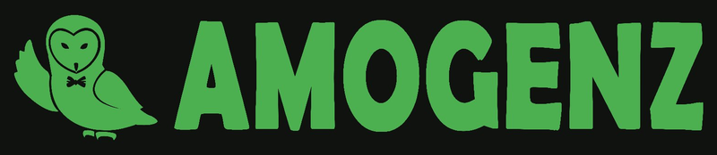
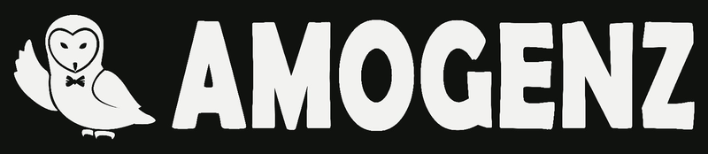

Satu suara, dalam gelap
maupun terang.
Sistem desain AMOGENZ — soft, memahami user, dan konsisten di semua permukaan. Halaman ini sendiri bisa diganti modenya lewat tombol di atas.
Konsep UI: AMOGENZ VIBE
UI yang memahami user dan peka terhadap kebiasaan. Untuk web, artinya satu hal — pengunjung harus bisa berkata ini secepat mungkin:
Kalimat itu adalah ukuran sukses web ini. Bukan lama kunjungan, melainkan kecepatan paham.
Informatif dulu. Tugas web ini bukan membuat orang betah, melainkan membuat pengunjung paham. Setiap layar menjawab satu pertanyaan: ini apa?
Mudah dicerna. Satu layar, satu pesan. Informasi disusun seperti tangga — dari yang paling penting ke pendukung.
Cepat pergi itu sukses. Begitu pengunjung "ngeh", web boleh ditutup. Menahan dengan distraksi justru mengkhianati tujuannya.
Biasa → Nyaman → Langsung Paham. Pakai pola yang sudah jadi kebiasaan. Nyaman tidak harus beda — kalau beda, user harus kenalan dulu.
Cara Kami Mendesain
Tiga pegangan kami dalam mendesain:
1. User tidak disuruh mikir
UI yang bagus itu yang tidak disadari. User memikirkan isi — pesan, postingan, orang — bukan aplikasinya. Setiap detik user berhenti dan bertanya "ini tombol apa ya?" adalah kegagalan kami.
2. Setiap aksi ada jawabannya
Setiap aksi ada jawabannya: terkirim, tersimpan, terhapus — seketika. Aplikasi bertanya hanya kalau akibatnya tidak bisa dibatalkan.
3. Posisi tidak pindah-pindah
Jari sudah hafal letak tombol dan menu. Jangan digeser-geser — antarhalaman maupun antarversi.
Pakai pola yang sudah biasa. Biasa → nyaman, nyaman → langsung paham tanpa belajar. Tidak harus beda — kalau beda, user harus kenalan dulu.
Beda medium, beda kebiasaan
Tiap layar punya kebiasaan sendiri — jangan saling memaksa:
HP
Satu tangan, sesi cepat. Menu jadi satu tombol, yang penting dalam jangkauan jempol. Contoh: halaman ini — buka di HP.
iPad
Disentuh seperti HP, tapi layarnya lega.
Desktop
Mouse + keyboard. Navigasi terlihat semua, tidak perlu berburu menu. Contoh: spesimen topbar di bawah.
Logo
Varian A — font asli dipertahankan, burung hantu 100% utuh. Logo utama untuk latar gelap; varian teks gelap untuk latar terang.
Ruang aman
Beri jarak kosong x di semua sisi — x = tinggi burung hantu. Jangan tempelkan logo ke tepi atau elemen lain.
Ukuran minimum
Digital: jangan lebih kecil dari 36px — di bawah itu tulisan AMOGENZ tidak terbaca lagi. Pakai burung saja tanpa tulisan.
Jangan lakukan
Jangan diregangkan / dipadatkan
Jangan diputar / dimiringkan
Jangan diganti warna sembarangan — pakai varian resmi
Jangan ditambah efek / bayangan warna
Logo tunggal (tanpa tulisan)
Burung hantu saja, utuh apa adanya — untuk ruang sempit, foto profil medsos, dan avatar. Tetap hijau #4CAF50 di mode gelap maupun terang.
 LOGO TUNGGAL — BURUNG SAJA
LOGO TUNGGAL — BURUNG SAJA
Varian warna lockup
Logo lengkap (burung + tulisan AMOGENZ) punya 2 model resmi selain versi standar. Bentuknya sama persis — yang beda hanya warnanya.

HIJAU SEMUAHijau semua
Burung dan tulisan AMOGENZ semuanya hijau #4CAF50. Dipakai kalau mau tampil tegas dan berani — misalnya spanduk acara, kaos, atau banner. Wajib di atas latar gelap.

SATU WARNA — PUTIHSatu warna (putih)
Semuanya putih, tanpa warna lain. Dipakai kalau medianya cuma bisa satu warna — misalnya stempel, sablon satu warna, atau fotokopi. Tetap di atas latar gelap.
Warna
Palet resmi mode gelap + mode terang. Ketuk warna untuk menyalin hex.
Latar gelap #101210 = warna di belakang judul prototipe (revisi terbaru). Hijau #4CAF50 = hijau tulisan prototipe, berlaku semua halaman.
Prinsip Soft
Semua soft, tidak jeglek — di mode gelap maupun terang. Bandingkan:
Terlalu kontras
Hitam pekat #000, putih murni #FFF, hijau neon. Mata cepat lelah, kesan murahan.
TombolLembut di mata
Latar #101210 / #F2F2ED, teks soft, hijau #4CAF50. Nyaman lama, kesan premium.
TombolMode gelap ≠ hitam pekat. Latar memakai #101210 — hitamnya "bernapas", tidak menekan mata.
Mode terang ≠ putih murni. Latar memakai #F2F2ED — putihnya hangat, tidak menyilaukan.
Tangga Warna = Tangga Informasi
Warna mengikuti pentingnya informasi. Contoh langsung (ikut mode halaman ini):
Hirarki Informasi
Urutan penting-tidaknya informasi di sebuah tampilan.
Coba bandingkan dua kartu berisi info yang sama persis ini:
Versi acak: tanggalnya teriak, judulnya bisik — mata bingung mulai dari mana. Versi rapi: sekali lirik langsung paham. Yang penting tampil penting.
Hirarki Desain (Visual)
Urutan yang dilihat mata — diatur lewat ukuran, warna, dan jarak.
Urutan baca mata: judul (paling besar) → harga (kontras) → tombol beli. Alatnya cuma tiga: ukuran, warna, jarak.
Penerapan
Komponen baku dalam mode aktif halaman ini — ganti sakelar tema untuk melihat keduanya tetap soft:
TOMBOL
LENCANA
BARU INFOKARTU
GEOMETRI
Semua sudut membulat — tanpa sudut lancip. Jari-jari: 8 / 10 / 12 / 16 / pil.
Spesimen Hidup
Ini elemen asli dari produk kami — hidup dan bisa diklik, bukan gambar.
Topbar web utama
Topbar asli web utama — kode dan gayanya sama persis dengan yang live.
Ini topbar beneran — bukan gambar. Di web aslinya yang layar lebar, navigasinya tampil semua.
Banner — kabar yang hilang sendiri
Persis seperti banner blog kami: muncul 3,2 detik, lalu hilang sendiri.
Klik tombolnya — ini banner asli blog kami.
Dialog konfirmasi — bertanya hanya kalau permanen
Dialog asli blog kami saat menghapus gambar. Batal kiri, tombol bahaya kanan — tidak pernah tukar. Pola yang sama dipakai aplikasi Aksara.
Hapus gambar ini?
Gambar yang sudah dihapus tidak bisa kembali.
Klik → jawab → banner muncul. Alur beneran di blog kami.
Tombol — bentuk dan posisi dikunci
Tombol asli blog kami: utama pil hijau, bahaya pil merah, sekunder hantu.
Klik Simpan → banner. Klik Hapus → dialog. Tersambung seperti di produk asli.
Tombol aksi 44 — dijawab seketika
Tombol bulat 44px dari halaman baca blog kami — pas seukuran jari. Sentuh → langsung merespons. Sentuh lagi → batal.
Klik — langsung hijau, angka tambah, posisi tidak bergeser.
Yang Tidak Kami Lakukan
Daftar larangan kami — kalau ada yang melanggar ini di produk AMOGENZ, itu bug.
- ×Tombol pindah-pindah tempat antarhalaman atau antarversi tanpa alasan.
- ×Satu ikon untuk dua maksud, atau dua ikon beda untuk maksud yang sama.
- ×Bertanya untuk hal yang bisa dibatalkan. Masa like saja ditanya yakin?
- ×Kabar baik yang nempel terus. Notifikasi yang tidak hilang sendiri untuk kabar gembira = dilarang.
- ×Animasi yang minta dikagumi. UI tidak sedang tampil di panggung.
- ×Tombol penting di luar jangkauan jempol pada layar utama HP.
- ×Memaksa pola satu layar ke layar lain. Pola HP dipaksa ke desktop, atau pola aplikasi dipaksa ke web.
Untuk Developer: Angka yang Dikunci
Mau pakai AMOGENZ VIBE di proyekmu? Ini angka yang tidak boleh diubah:
Hijau utama
Tombol & elemen: #4CAF50
Teks hijau di latar gelap: #7CC47F
Teks hijau di latar terang: #2E7D32
Makna warna
Bahaya (hapus): #E5484D
Peringatan: #E8A13D
Latar gelap
Latar: #101210
Kartu: #212421
Teks: #F2F3F0
Latar terang
Latar: #F2F2ED
Kartu: #FAFAF6
Teks: #20221F
Sudut (radius)
Kartu: 20
Dialog: 28
Kolom isian: 12
Tombol aksi: pil 999
Lainnya
Font: font sistem (bukan kustom)
Jarak: kelipatan 4 / 8
Target sentuh minimal: 44
Yang dikunci: angka dan perilakunya. Selama itu dipatuhi, proyekmu sudah ber-VIBE.